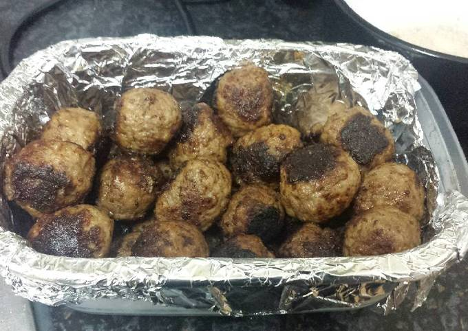

Classic meatballs

Being a Swede, this is something I basically grew up on.
Served with potatoes, lingonberry jam and sauce. How to make that is another story!
Ingredients
- 1 tablespoon butter
- 1 tablespoon minced onion
- 1/3 cup fine dry bread crumbs
- 1/2 cup water
- 1/2 cup half-and-half
- 3/4 pound ground beef
- 1/4 pound ground pork
- 2 teaspoons salt
- 1/3 teaspoon white sugar
- 3 tablespoons butter
Instructions
- Melt 1 tablespoon butter in a frying pan over low heat; cook and stir onion in melted butter until lightly browned, 5 to 8 minutes.
- Mix bread crumbs, water, and half-and-half in a large bowl; let stand for about 2 minutes.
Stir cooked onion, ground beef, ground pork, salt, white pepper, and sugar into bread crumb mixture until thoroughly mixed. Shape mixture into about 48 very small meatballs.
- Melt 3 tablespoons butter in a skillet; add meatballs. Brown slowly, allowing about 25 minutes, until meatballs are fully cooked in the middle and no longer pink.
Shake pan occasionally to cook evenly.